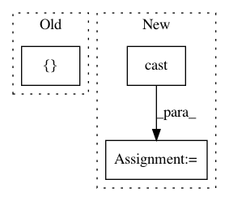

0bf56c5e8db53e152e7095087499d072018283e6,src/test.py,,model_fn,#,132
Before Change
"sequence_error" : sequence_error},
every_n_iter=100)
return tf.estimator.EstimatorSpec(mode=mode, loss=loss, predictions=tf.nn.softmax(logits),
train_op=None, prediction_hooks=[logging_hook])
def main(argv=None):
After Change
logits,sequence_length,label,length)
global_step = tf.convert_to_tensor(tf.train.get_or_create_global_step())
global_step = tf.cast(global_step, tf.float32)
sequence_error = tf.cast(sequence_error, tf.float32)
//Get the correct format to pass tp estimator spec
result = tf.convert_to_tensor([(tf.stack([global_step,
loss,
label_error,
sequence_error], axis=0))])
return tf.estimator.EstimatorSpec(mode=mode, loss=loss,
predictions=result,
train_op=None)
In pattern: SUPERPATTERN
Frequency: 3
Non-data size: 3
Instances
Project Name: weinman/cnn_lstm_ctc_ocr
Commit Name: 0bf56c5e8db53e152e7095087499d072018283e6
Time: 2018-06-29
Author: am.lamsal@gmail.com
File Name: src/test.py
Class Name:
Method Name: model_fn
Project Name: tensorflow/cleverhans
Commit Name: 9c69c1fe57ca5bdf86e382859aa886ccd43eafc8
Time: 2019-03-21
Author: ss.shankar505@gmail.com
File Name: cleverhans/experimental/certification/dual_formulation.py
Class Name: DualFormulation
Method Name: construct_lanczos_params
Project Name: wenwei202/iss-rnns
Commit Name: d41aa4d2c995796e3978a83052515572f402fa5f
Time: 2017-01-21
Author: seominjoon@gmail.com
File Name: basic/model.py
Class Name: Model
Method Name: _build_loss